Opal is a focus and screen-time management app that helps users limit distractions through app blocking, scheduling, and usage control tools.
My Role
UX Designer · 2-person team, mentor-guided, April 2026. I led the end-to-end research process, conducting all 6 interviews, coding 6reviews, and running the heuristic evaluation. Competitive analysis, wireframes, and prototypes were built collaboratively with the team.
Opal's blocking system lacks flexibility for different needs.
Opal helps users block distractions and manage screen time, but its current blocking system often feels limited and one-size-fits-all. Users may disable restrictions when motivation is low or struggle to find a balance between productivity and necessary digital engagement.
Opal's current system is built around strict, one-size-fits-all blocking, offering limited flexibility to adapt to different contexts and usage needs.
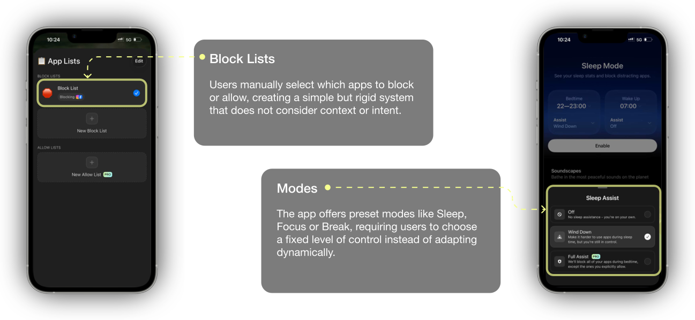
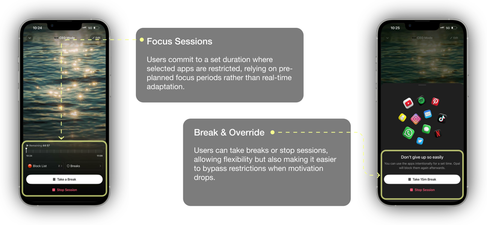
Users begin motivated, but inflexible systems fail to meet evolving needs, causing frustration and drop-off.
This section synthesizes insights from 100+ App Store and Google Play reviews, revealing that while users often start with strong motivation, but strict and inflexible systems fail to adapt as their motivation and real-time needs change.When users need quick access for everyday tasks, rigid restrictions become frustrating and impractical. Over time, this lack of flexibility creates tension, leading users to override controls or abandon the system altogether.

Users Struggle to Follow Rigid Restrictions
Users often start with strong intentions, but struggle to follow strict restrictions when their motivation changes.
Users Need Flexibility for Real-Life Situations
Users sometimes need quick access to apps for real-life tasks, making full blocking frustrating and impractical.
Overly Restrictive Systems Lead to Drop-Off
When the system feels too restrictive or difficult to manage, users tend to override restrictions or stop using the app altogether.
Consolidating our key insights into 2 goal-oriented personas.
Mike needs a system that reduces distractions without requiring effort.
"I want the system to understand my behavior automatically."
Goals
- Stay focused without missing important communication, reduce stress-driven phone use, and feel more in control of attention during work and family time through a passive support system.
Pain Points
- Notifications constantly interrupt his attention
- Productivity apps require too much setup and maintenance
- Work communication makes it difficult to disconnect completely
- Awareness alone does not help him change behavior
Sima needs stronger friction and social accountability.
"Distraction happens when my brain wants to escape difficult work."
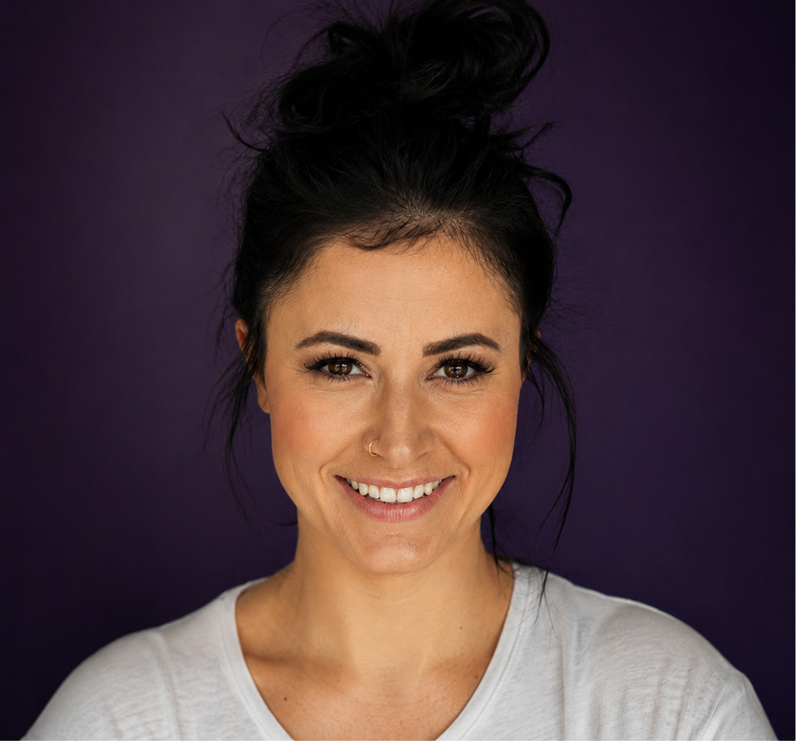
Goals
- Maintain consistent deep focus by reducing stress-driven scrolling, staying aligned with goals during sessions, and visually tracking long-term progress.
Pain Points
- Easy bypass completely undermines her system
- Self-imposed rules weaker than social commitment
- Maintaining discipline is mentally exhausting
This map helps uncover where Opal supports users and where it creates friction, pointing to design opportunities around flexibility, motivation, and meaningful progress.

We prioritized opportunities that offered the greatest value to users while remaining practical to implement.
After generating and discussing a wide range of concepts, we prioritized ideas based on their potential value to users and implementation feasibility. This helped us identify the most promising opportunities to explore further in the design process.
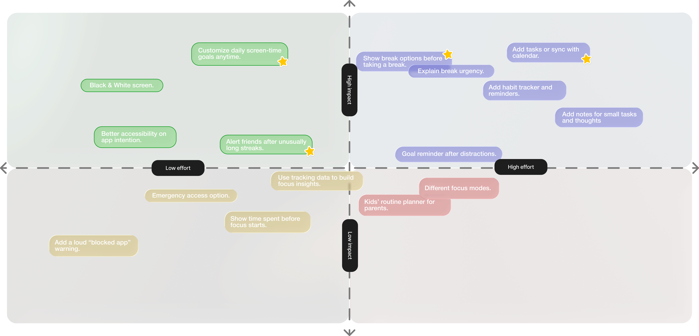
Users prefer focus experiences that feel flexible and supportive rather than overly restrictive.
To understand how Opal's user experience compares with similar products, we conducted a competitive analysis focused on key features and usability patterns. We examined several focus and screen-time management apps, including Flora, Be Present, Freedom, and Anko, to identify opportunities, strengths, and gaps in relation to Opal.
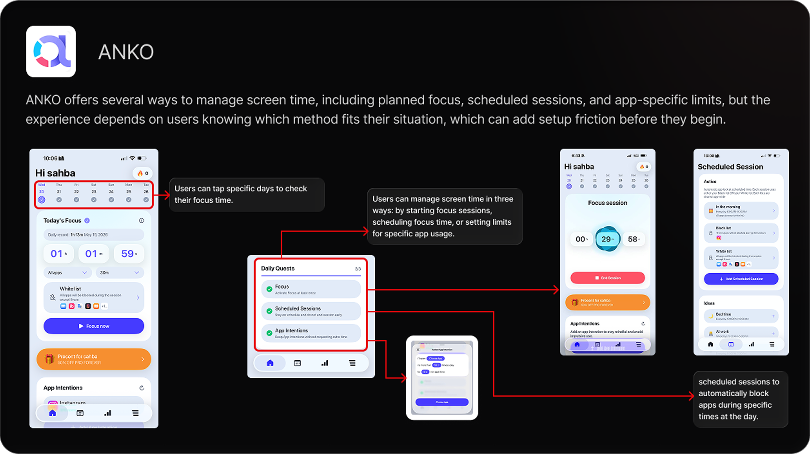
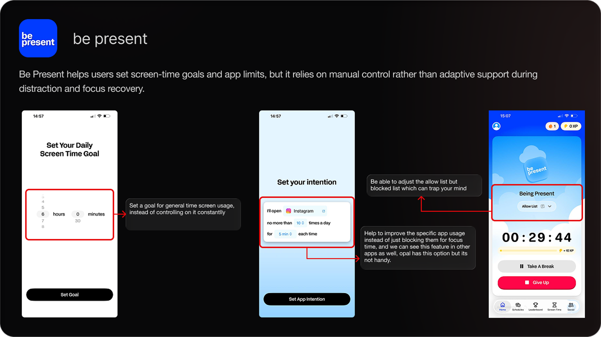
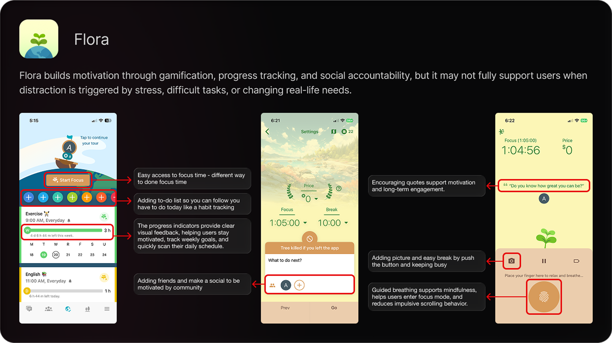
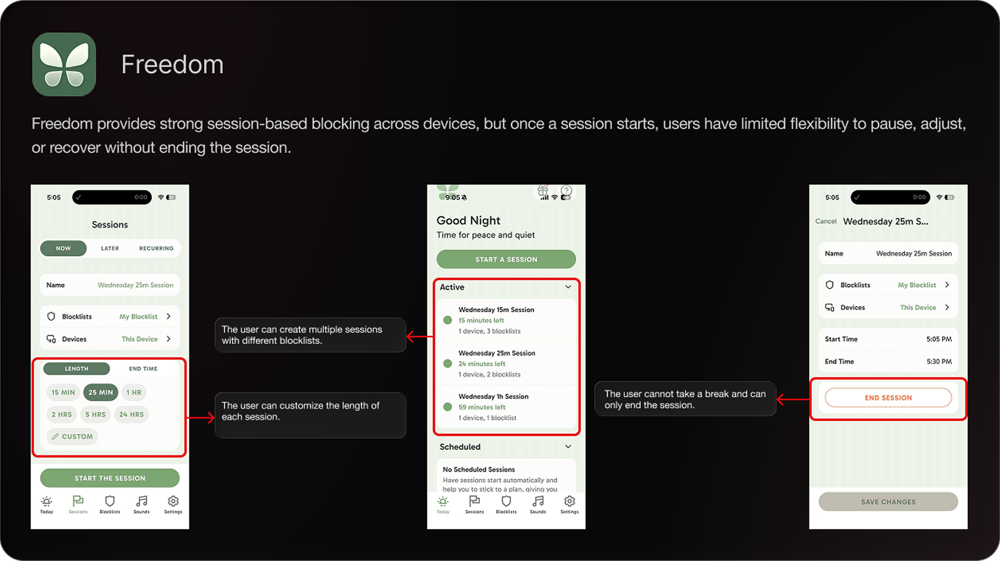
Each feature is tied to a confirmed research failure. Every decision is grounded in real user behavior, not speculation.
This redesign focuses on creating a more accessible and adaptable user experience. The app supports different daily needs and contexts, allowing users to choose the right level of focus, break, or app control based on their current situation.
Pause Session
Enables users to step away from a focus session for longer periods when needed, while preserving their progress so they can easily resume where they left off.
To-Do List
Helps users start each focus session with a clear goal, so they know what they are working on and have a reason to return to focus after a break.
Peer Support
Connects users with a supportive community where they can stay motivated, build accountability, and feel less isolated while working toward their focus goals.
Improved Screen Time Access
Makes the existing total screen-time limit easier to find by highlighting the icon, helping users manage their overall device use more quickly and clearly.
Exit Reason prompt
Asks users why they are leaving a focus session, helping the app understand their needs and support better future focus experiences.
60% of users struggled to understand the screen on first view. One UI improvement significantly increased clarity.
Designs were tested in a cold-start scenario, with no guidance provided to participants. Observed failures had identifiable causes, producing actionable insights for UI refinement.
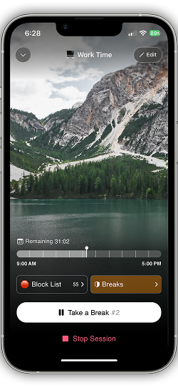
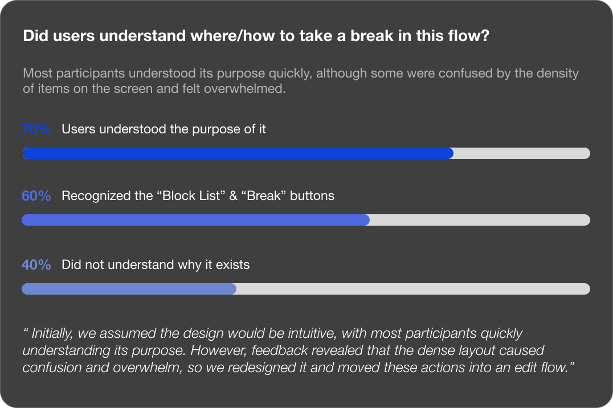
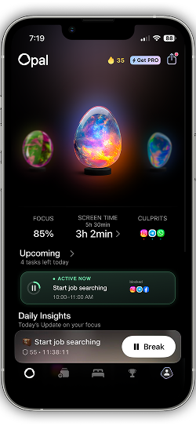
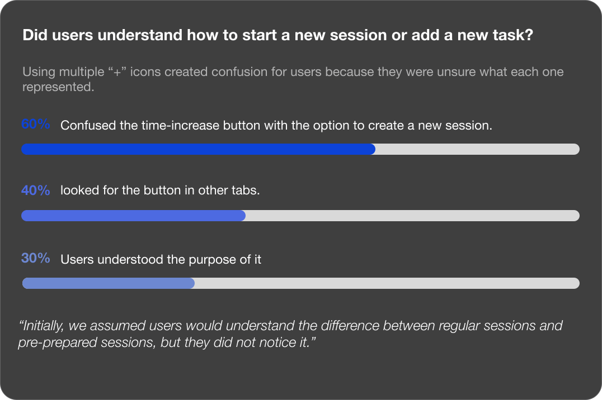
Two features required a second pass after Round 1 testing. The issues had clear causes, and the fixes were precise and targeted.

Screen time management should feel empowering, not guilty or overwhelming.
Managing screen time is not only a productivity problem; it is also an emotional experience. Every design decision should ask: does this help users feel more in control, or does it make them feel guilty and overwhelmed?
Flexibility is key for real-life focus.
Users do not manage focus in perfect conditions. The app needs to support interruptions, breaks, and everyday responsibilities without making users start over.
Screen time management should feel supportive, not restrictive.
I learned that users need more than control tools. They need an experience that helps them feel motivated, guided, and in control instead of guilty or overwhelmed.
More case studies